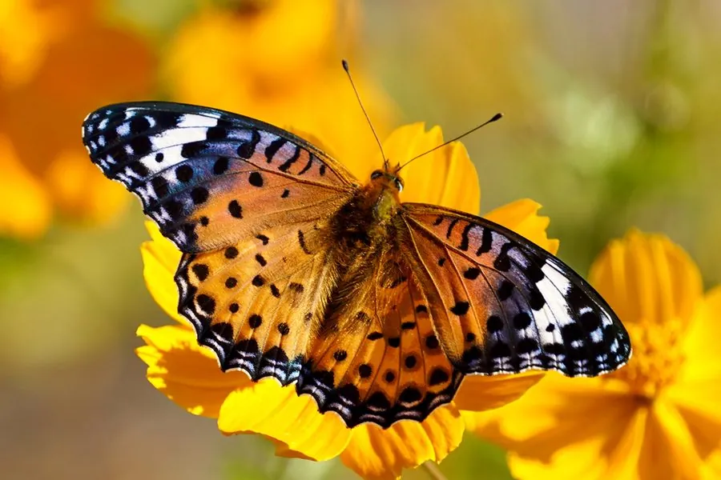

昆虫 · 动物界
斐豹蛱蝶 Argyreus hyperbius

雄蝶翅面橙黄带黑色豹纹，雌蝶拟态有毒的青斑蝶，雌雄外观差异明显，幼虫取食堇菜科植物，是常见蝴蝶。
- 分类
- 门节肢动物门纲昆虫纲目鳞翅目科蛱蝶科属斐豹蛱蝶属
- 栖息环境
- 开阔草地、路旁、花园与林缘，堇菜科植物附近
- 地理分布
- 中国大部分地区，以及日本、朝鲜半岛、东南亚和南亚
- 保护级别
- 暂无评估
物种志
斐豹蛱蝶翅展约 6–7 cm，雄蝶翅面橙黄色，布满黑色斑点，形似豹纹；雌蝶翅面呈黑褐色，前翅端部有白色和紫蓝色斑块，拟态有毒的青斑蝶类，雌雄差异非常明显。翅反面颜色较淡，有复杂的斑纹。
成虫飞行迅速，常在开阔草地、路旁和花园访花，也喜欢吸食腐果汁液。雌蝶把卵产在堇菜科植物附近，幼虫取食紫花地丁、三色堇等叶片。斐豹蛱蝶一年发生多代，以成虫或幼虫越冬，广泛分布于中国大部分地区，以及日本、朝鲜半岛、东南亚和南亚，并已随园艺植物传入澳大利亚等地。雄蝶的豹纹和雌蝶的拟态是同一物种两种不同的生存策略，在野外很容易被误认为两种蝴蝶。
形态与习性
- 食性幼虫取食紫花地丁、三色堇等堇菜科植物
- 翅展约 6–7 cm
- 雌雄差异雄蝶橙黄带豹纹，雌蝶拟态青斑蝶
- 生活史一年发生多代，以成虫或幼虫越冬
- 习性成虫飞行迅速，喜访花和吸食腐果
- 分布亚洲广布，并已传入澳大利亚
趣味知识
- 斐豹蛱蝶雌蝶模仿有毒的青斑蝶，雄蝶则是橙黄色豹纹。
- 它的幼虫以堇菜科植物为食，花园里的三色堇也可能被啃食。
- 斐豹蛱蝶已随园艺植物传入澳大利亚，成为当地的外来蝶种。